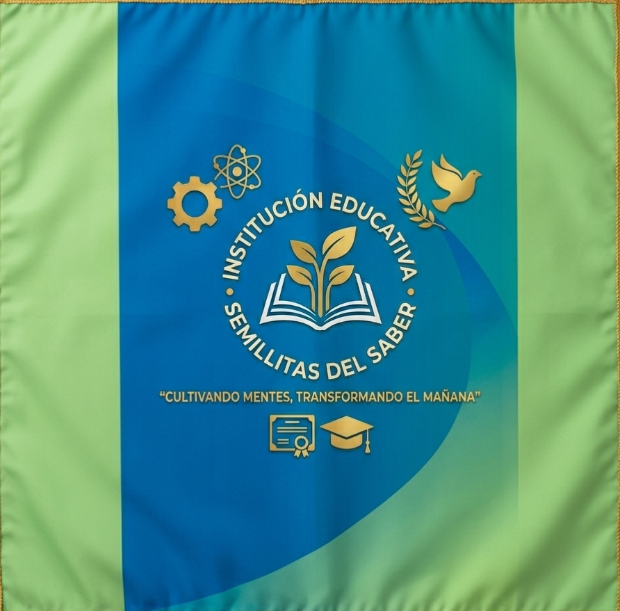

Nuestra Institución
Historia
la Institución Educativa Técnica Semillitas del Saber es un testimonio de adaptación y visión. Lo que comenzó como una pequeña escuela en 1940 bajo el ideal de formar a los ciudadanos de la región, ha evolucionado para convertirse hoy en un referente de tecnología e innovación.
1940 - 1980: Los Cimientos y el Valor de la Educación
La institución abrió sus puertas en 1940, fundada sobre los pilares del amor, la creatividad y el pensamiento crítico. Durante décadas, su misión se centró en la formación humana y la siembra de valores fundamentales en la comunidad, consolidándose como un espacio esencial para la básica primaria y secundaria.
1990 - 2020: La Evolución Académica
A medida que el mundo avanzaba, el colegio también lo hizo, ampliando su oferta académica para incluir la Media Académica (10° a 11°), siempre manteniendo su sello distintivo de formación en valores. Fue un periodo de transición donde se empezó a gestar la necesidad de conectar la pedagogía con el pensamiento lógico necesario para el nuevo milenio.
2026: La Era de la Innovación Técnica
Hoy, tras más de ocho décadas de historia, la institución ha dado un salto cualitativo hacia la vanguardia tecnológica mediante su alianza estratégica con Boyacode S.A.S.. Esta unión ha permitido:
La modernización total de los laboratorios de robótica, integrando programación y automatización avanzada en el currículo.
La implementación de una plataforma de gestión académica digital para optimizar los procesos de la comunidad.
La transición hacia un modelo de educación técnica integral que combina el legado pedagógico de 1940 con la exigencia tecnológica de 2026.
Esta trayectoria, que inició hace 86 años, demuestra que la Institución Educativa Técnica Semillitas del Saber no solo enseña, sino que evoluciona junto a sus estudiantes, asegurando que cada "semillita" plantada en 1940 siga floreciendo hoy como un profesional líder en la transformación digital.
¿Quiénes somos?
la Institución Educativa Técnica Semillitas del Saber, una entidad con una trayectoria que comenzó en 1940, dedicada a formar generaciones bajo los pilares fundamentales del amor, la creatividad y el pensamiento crítico. Como institución, nos definimos a través de los siguientes ejes: Legado Histórico: Nacimos en 1940 con el compromiso de formar ciudadanos íntegros, consolidándonos a través de las décadas como un espacio esencial para la formación en valores y el desarrollo humano. Innovación Técnica: En nuestra etapa actual, hemos evolucionado hacia un modelo de educación técnica de vanguardia, integrando la robótica, la programación y la automatización en nuestro currículo. Alianza Estratégica: Contamos con el respaldo y la infraestructura técnica de Boyacode S.A.S., lo cual nos permite ofrecer laboratorios de alta tecnología y procesos académicos digitalizados. Formación Integral: Nuestro modelo abarca desde la educación básica primaria hasta la media académica, asegurando una transición fluida donde el estudiante desarrolla tanto sus capacidades críticas como sus habilidades técnicas para el futuro.
Logo
Bandera

Lema
"Sembrando conocimiento, cosechando futuro."
Misión
Formar seres humanos integrales desde la educación básica hasta la media académica, cultivando el amor, la creatividad y el pensamiento crítico como pilares esenciales. Nuestra labor educativa honra una sólida tradición institucional iniciada en 1940, integrando procesos de innovación técnica y tecnológica para preparar a nuestros estudiantes como líderes capaces de transformar su entorno social y enfrentar los desafíos del mundo actual.
Visión
Consolidarnos para el año 2030 como la institución educativa técnica de referencia en la región, reconocida por nuestra excelencia en la formación integral y el desarrollo de competencias tecnológicas de vanguardia. Aspiramos a ser un semillero de profesionales líderes, manteniendo vivo el legado de valores, convivencia y compromiso humano que nos ha caracterizado desde nuestra fundación, siendo el puente definitivo entre la formación escolar y las oportunidades del futuro.
Perfil de un Semillista
- Innovador Tecnológico: Competencias en robótica y programación.
- Ciudadano Ético y Pacífico: Constructor de paz y convivencia.
- Líder Autónomo: Pensamiento crítico y aprendizaje autónomo.
- Comprometido con la Excelencia: Esfuerzo y dedicación académica.
- Pensador Crítico: Posee la capacidad de analizar, cuestionar y proponer soluciones innovadoras ante los retos de su entorno.
Nuestro Enfoque
Nos distinguimos por ser una institución moderna y eficiente.
- Gestión Académica: Procesos simplificados.
- Seguimiento: Control de asistencia integrado.
- Cultura de Paz: Convivencia escolar y liderazgo.
Himno Institucional
I Estrofa
En la tierra fértil de un sueño nacido,
la mente despierta buscando el albor,
brota el saber, horizonte encendido,
semilla de vida, luz de esplendor.
Pre-Coro
El saber es el pulso que marca el camino,
la duda, la chispa que invita a crear,
forjamos con manos el propio destino,
¡Semillitas del Saber, fuerza al andar!
Coro
¡Sembrando conocimiento, cosechando futuro!
Nuestra bandera es faro de transformación,
unidos alzamos el paso seguro,
¡Semillitas del Saber, nuestra institución!
¡Ciencia y valores, eterno estandarte,
luz que nos guía, inmenso ideal!
II Estrofa
Del aula al mundo, la meta trazamos,
innovación que transforma el ayer,
con cada algoritmo el mañana creamos,
¡orgullo y gloria de nuestro saber!
III Estrofa
Ciudadanos libres, de paz constructores,
en el año treinta y dos brillarán,
nuestros estudiantes, grandes autores,
los frutos que el mundo sabrá valorar.
IV Estrofa
Integridad y autonomía constante,
¡Semillitas del Saber, siempre adelante!
¡Semillitas del Saber, siempre adelante!
Instalaciones y Entorno Escolar
La Institución Educativa Técnica "Semillitas del Saber" cuenta con espacios diseñados para fomentar el aprendizaje.
- Centros de Innovación Tecnológica: Espacios equipados para competencias digitales.
- Gestión Administrativa Automatizada: Procesos digitales eficientes.
- Entornos de Convivencia y Paz: Desarrollo humano y social.
- Infraestructura de Aprendizaje Integral: Espacios versátiles para proyectos.